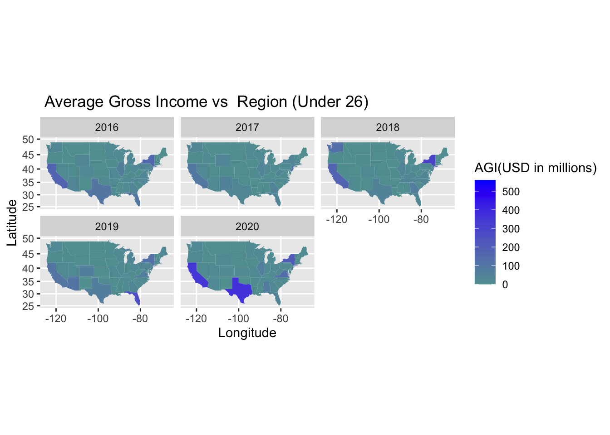
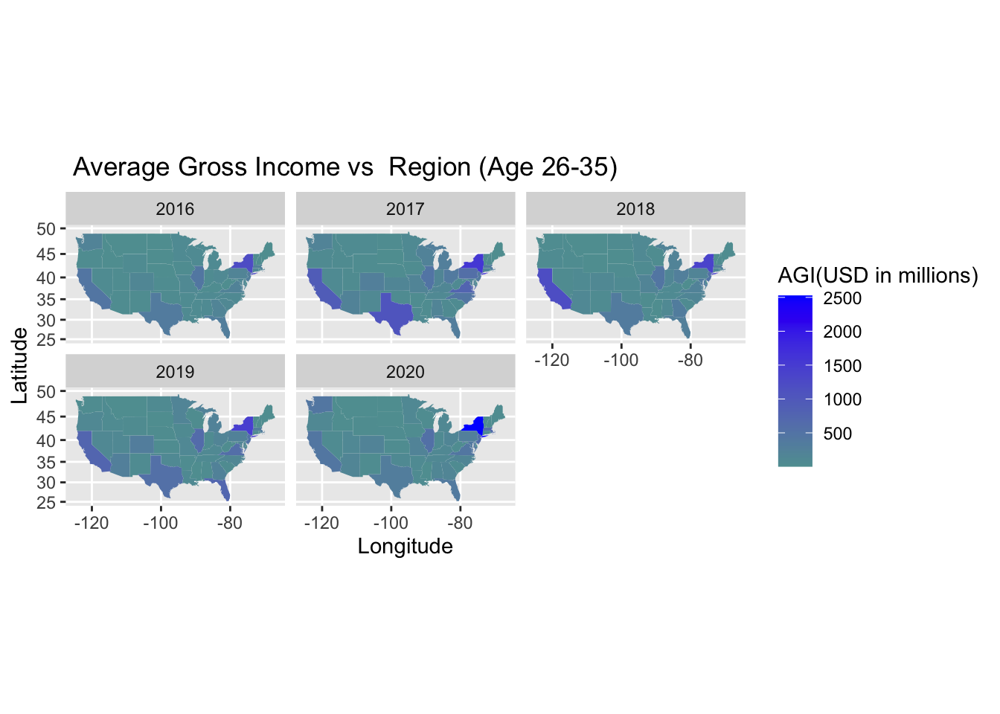
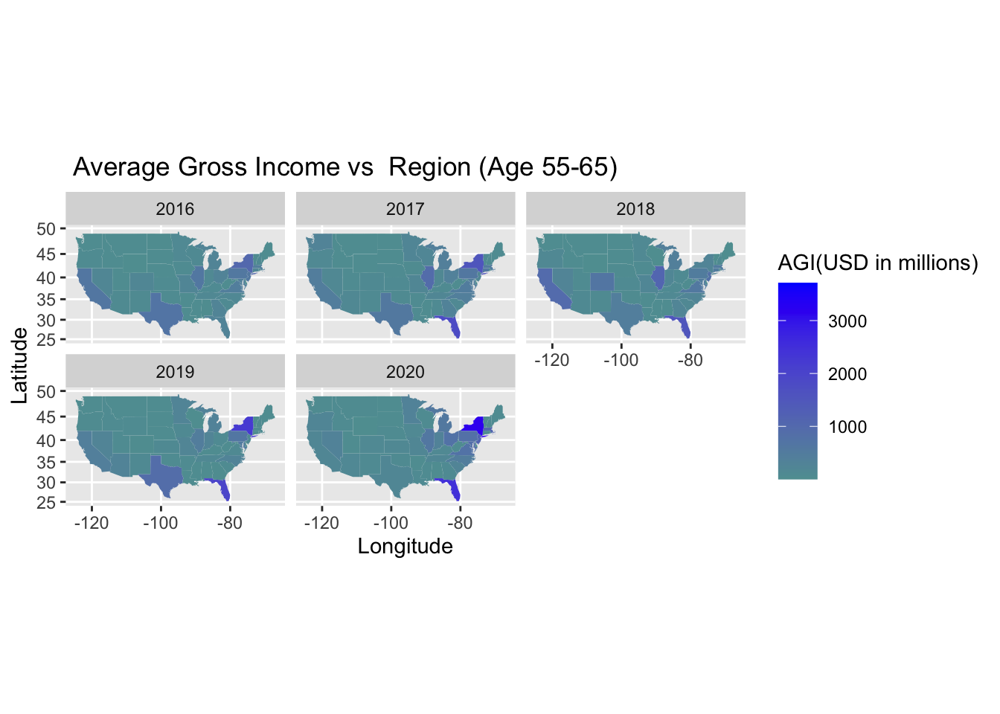
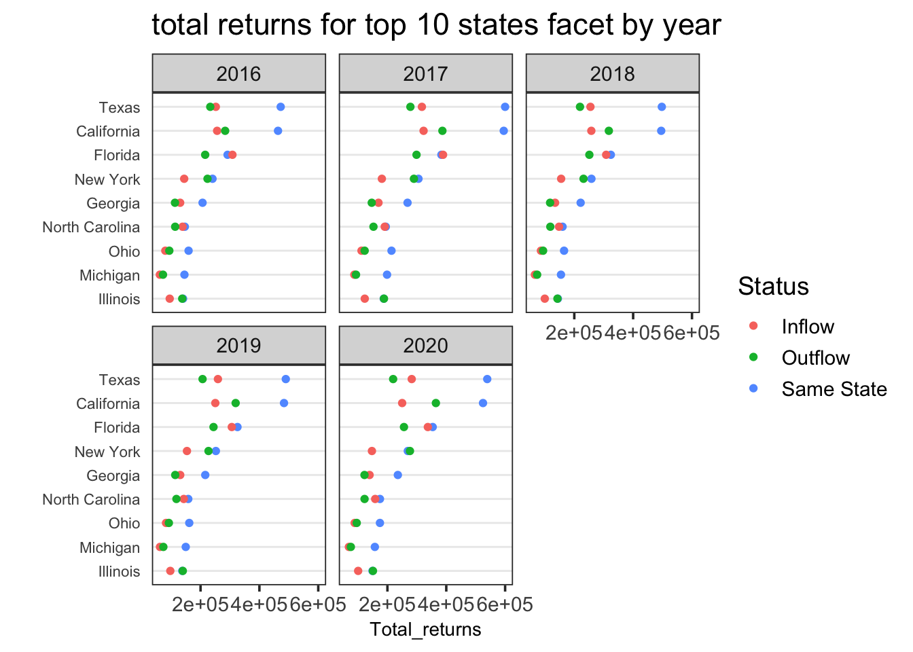

US-Migration-Data
1
Introduction
2
Proposal
2.1
Research topic
2.2
Data availability
2.2.1
Data Format and Frequency
2.2.2
Scope
2.2.3
Data Quality
2.2.4
References
3
Data
3.1
Sources
3.2
Cleaning / transformation
3.3
Missing value analysis
4
Results
5
Interactive component
5.1
U.S. Migration 2019-2020
6
Conclusion
Published with bookdown
U.S. Population Migration Data
Chapter 4
Results



